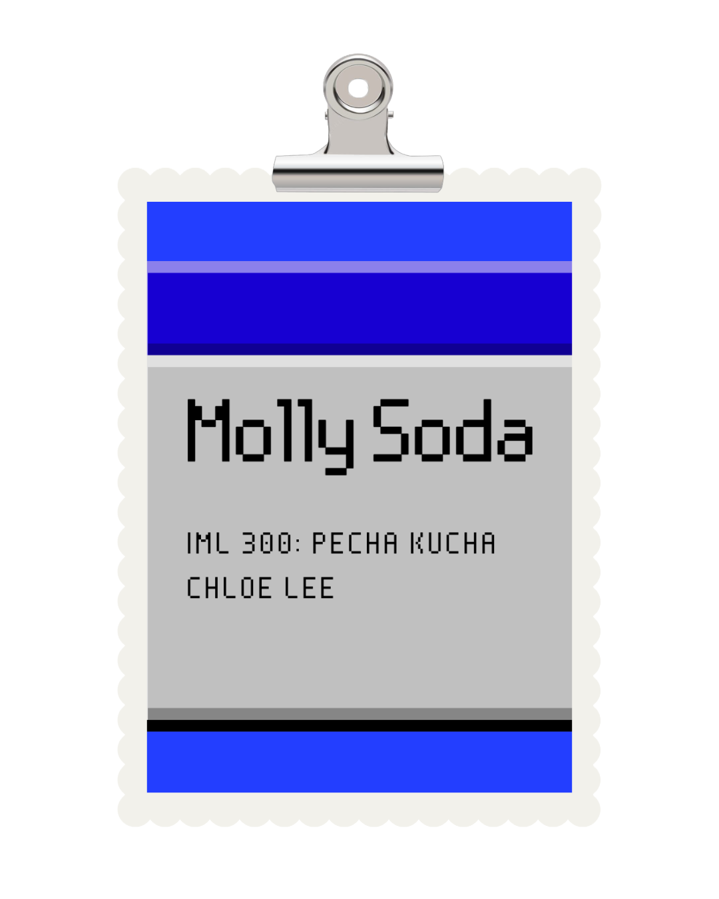
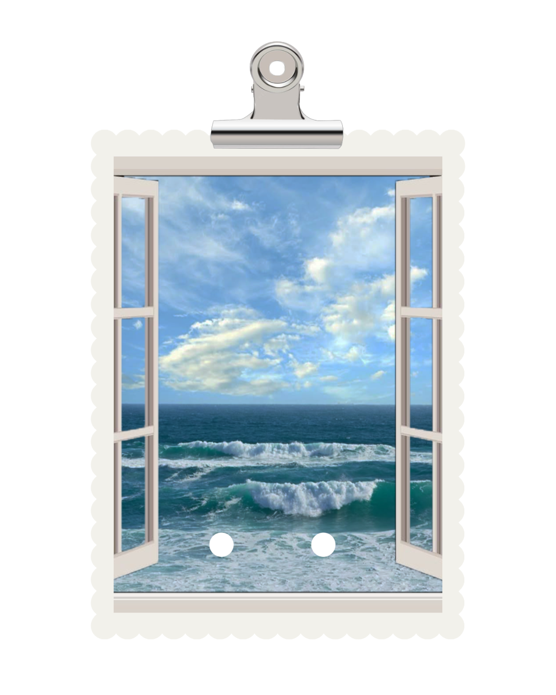
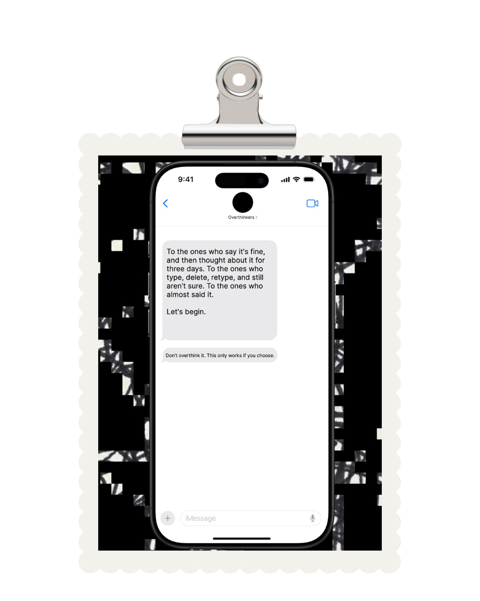
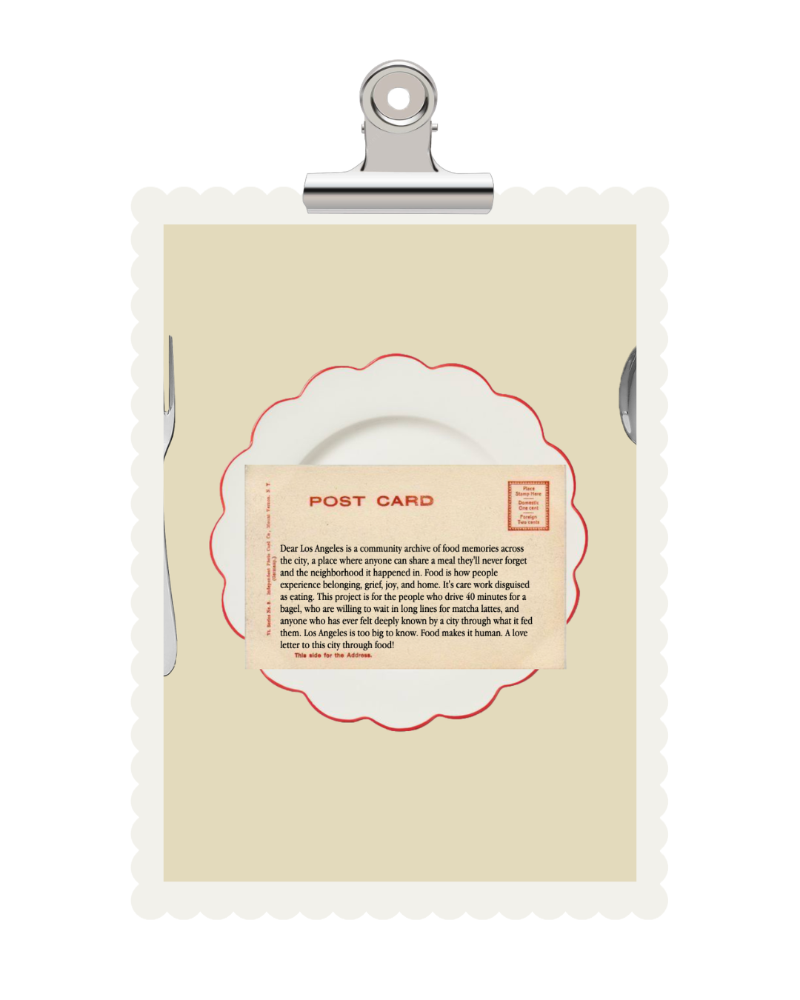

Main Projects

Pecha Kucha: Molly Soda

ASMR Window View
College dorms can often feel stuffy and overwhelming, so I wanted to create a space where students can relax and mentally escape from the stress of their studies. This experience allows users to “teleport” to calming environments while staying in one place, including a beach, forest, grassy valley, and city at night. Using forward and back circle buttons, users can move between locations at their own pace and enjoy soft ASMR sounds that change with each environment, creating a soothing atmosphere for studying or relaxation.

The Thing I Almost Said
The Thing I Almost Said: For my interactive narrative project, I wanted to explore the process of overthinking through small, everyday moments. It begins with a simple choice, like picking an ice cream flavor, and gradually reveals how decisions can lead to hesitation, replaying moments, and self-doubt. As users move through the experience, the narrative becomes more personal, guiding them through memories, messages, and unsaid thoughts. The structure is designed to feel reflective and familiar, mirroring how overthinking unfolds in real life. For the final page, I created a space where users can write and send a message they’ve been holding in, reflecting on the thoughts we carry but are often too afraid to say.

Dear Los Angeles
Dear Los Angeles is a community archive of food memories across the city, a place where anyone can share a meal they'll never forget and the neighborhood it happened in. Food is how people experience belonging, grief, joy, and home. It's care work disguised as eating. This project is for the people who drive 40 minutes for a bagel, who are willing to wait in long lines for matcha lattes, and anyone who has ever felt deeply known by a city through what it fed them. Los Angeles is too big to know. Food makes it human. A love letter to this city through food!